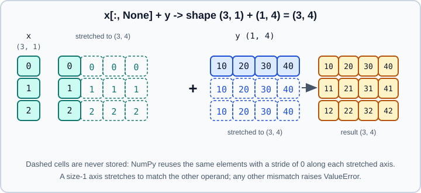

Broadcasting
|
This content was generated with the assistance of AI and should be verified against the official documentation before being relied on in production. |
Broadcasting is how NumPy applies an operation to arrays of different shapes without writing loops and without copying data.
matrix + row adds the row to every row of the matrix; x[:, None] * y builds a multiplication table. Almost every
vectorised numerical algorithm relies on it, and almost every shape error message comes from it.
This page targets NumPy 2.5 (2.5.4 was current in October 2026). Examples target Python 3.13 or 3.14 and were run on Python 3.13. Every example was run with NumPy 2.5.4 and the output shown is real. Related topics: the size-1 axis helpers in Reshaping, Stacking & Splitting, the zero strides in Memory Layout & Strides, the functions that broadcast in Universal Functions, and the dtype of the result in Type Promotion.
The idea
The simplest case is an array and a scalar. The scalar behaves as if it were stretched to the shape of the array, and no stretched copy is ever built.
import numpy as np
a = np.array([1.0, 2.0, 3.0])
print(a * 2.0, a * np.array([2.0, 2.0, 2.0]))Output:
[2. 4. 6.] [2. 4. 6.]
The same stretching happens between arrays whose shapes differ, as long as the shapes are compatible.
The rules
NumPy compares the shapes of two operands from the trailing (last) dimension backwards:
-
If one shape has fewer dimensions, it is padded with ones on the left.
-
Two dimensions are compatible if they are equal, or if one of them is 1.
-
The result has, along each axis, the larger of the two sizes (a length-1 axis is stretched to match).
-
If any pair of dimensions is incompatible, NumPy raises
ValueError(operands could not be broadcast together).

Align the shapes right and check column by column:
x (3, 1) -> 3 x 1
y (1, 4) -> 1 x 4
result (3, 4) 3 x 4np.broadcast_shapes applies the rules to shapes without creating arrays, which makes it handy for testing and for
documenting a function’s contract.
print(np.broadcast_shapes((8, 1, 6, 1), (7, 1, 5)))
print(np.broadcast_shapes((3,), (4, 1)))
print(np.broadcast_shapes((5, 1, 3), (1, 4, 1)))
try:
np.broadcast_shapes((3,), (4,))
except ValueError as e:
print(e)Output:
(8, 7, 6, 5) (4, 3) (5, 4, 3) shape mismatch: objects cannot be broadcast to a single shape. Mismatch is between arg 0 with shape (3,) and arg 1 with shape (4,).
Rows and columns
A matrix plus a vector works when the vector matches the last axis, because padding happens on the left.
img = np.arange(12).reshape(4, 3)
row = np.array([10, 20, 30]) # shape (3,) -> acts as (1, 3)
col = np.array([[100], [200], [300], [400]]) # shape (4, 1)
print(img + row)
print(img + col)Output:
[[10 21 32] [13 24 35] [16 27 38] [19 30 41]] [[100 101 102] [203 204 205] [306 307 308] [409 410 411]]
To combine along the other axis you must say so by adding a length-1 axis. Both of the following create a column:
x = np.arange(3); y = np.arange(4)
print(x[:, None] * y) # outer product: (3, 1) * (4,) -> (3, 4)
print(np.arange(1, 4)[:, np.newaxis] + np.array([0, 10]))
print(np.arange(5)[:, None].shape, np.arange(5)[None, :].shape, np.arange(5).reshape(-1, 1).shape)Output:
[[0 0 0 0] [0 1 2 3] [0 2 4 6]] [[ 1 11] [ 2 12] [ 3 13]] (5, 1) (1, 5) (5, 1)
None and np.newaxis are the same object. reshape(-1, 1) is an equivalent way to make a column.
When shapes do not match
A (3, 4) matrix and a length-3 vector fail, because the trailing dimensions 4 and 3 are neither equal nor 1. A frequent version of this error occurs when a per-row statistic is subtracted from a matrix.
try:
np.ones((3, 4)) + np.ones(3)
except ValueError as e:
print(e)
print((np.ones((3, 4)) + np.ones((3, 1))).shape)
data = np.array([[1., 2., 3.], [4., 5., 6.]])
try:
data - data.mean(axis=1) # (2, 3) - (2,): trailing 3 vs 2
except ValueError as e:
print(e)
print(data - data.mean(axis=1, keepdims=True)) # (2, 3) - (2, 1)
print(data - data.mean(axis=0)) # (2, 3) - (3,)Output:
operands could not be broadcast together with shapes (3,4) (3,) (3, 4) operands could not be broadcast together with shapes (2,3) (2,) [[-1. 0. 1.] [-1. 0. 1.]] [[-1.5 -1.5 -1.5] [ 1.5 1.5 1.5]]
The fix is keepdims=True, which keeps the reduced axis with length 1 so the result broadcasts back against the input.
Using keepdims on every reduction whose result is later combined with the original array is the most reliable habit in
NumPy. Reductions are covered in Reductions & Axis Semantics.
A quiet failure mode: unwanted broadcasting
Broadcasting also turns a bug into a plausible result instead of an error. Comparing a vector with a column of the same length produces a full square matrix, not a pairwise check.
v = np.arange(3); w = np.arange(3)
print(v == w) # intended: element by element
print((v == w[:, None]).shape) # accidental (3, 1): every pair
print((v + w[:, None]).shape)Output:
[ True True True] (3, 3) (3, 3)
A function that receives a (n, 1) column where it expected (n,) silently produces (n, n). Print .shape early, and
write an assertion such as assert y.shape == x.shape where a mismatch would otherwise go unnoticed. Empty axes follow the
same rules: (0, 3) with (1, 3) gives (0, 3), while (0, 3) with (2, 3) raises.
Worked examples
Standardising columns
Subtract each column’s mean and divide by its standard deviation: both statistics have shape (n_features,), so they
broadcast over the rows.
data = np.array([[1., 2., 3.], [4., 5., 6.]])
z = (data - data.mean(axis=0)) / data.std(axis=0)
print(z)Output:
[[-1. -1. -1.] [ 1. 1. 1.]]
This is exactly what scikit-learn’s StandardScaler does, with the difference that the scikit-learn transformer also keeps
the training statistics for the test set. A degenerate column with zero variance would divide by zero; see
Floating-Point Errors & errstate.
Pairwise distances
Insert axes so that every point of p meets every point of q along a new pair of axes, then reduce over the coordinates.
p = np.array([[0., 0], [3, 4], [6, 8]]) # 3 points in 2-D
q = np.array([[0., 0], [1, 1]]) # 2 points in 2-D
diff = p[:, None, :] - q[None, :, :] # (3, 1, 2) - (1, 2, 2) -> (3, 2, 2)
d = np.sqrt((diff ** 2).sum(axis=-1)) # (3, 2)
print(diff.shape)
print(d)Output:
(3, 2, 2) [[ 0. 1.41421356] [ 5. 3.60555128] [10. 8.60232527]]
The intermediate array has n * m * k elements, which is quadratic. For thousands of points use
scipy.spatial.distance.cdist or the expansion |a|^2 + |b|^2 - 2ab computed with a matrix product; broadcasting is the
clearest solution but not the most memory-efficient. The related linear-algebra routines are in
Linear Algebra.
Tables, masks and thresholds
pw = np.array([1, 2, 3])
print(pw[:, None] ** pw) # powers table
print(np.where(np.array([[True], [False]]), np.array([1, 2, 3]), 0))
print(np.maximum(np.array([[1], [5]]), np.array([3, 3, 3])))Output:
[[ 1 1 1] [ 2 4 8] [ 3 9 27]] [[1 2 3] [0 0 0]] [[3 3 3] [5 5 5]]
Every ufunc and every function documented as "broadcasting" (where, maximum, clip, comparison and logical operators)
follows the same rules.
Higher dimensions
Padding with ones on the left means a trailing-axis vector broadcasts against any number of leading axes. To match a
different axis, reshape or index with None.
m = np.ones((2, 3, 4))
print((m * np.arange(4)).shape) # last axis
print((m * np.arange(3)[:, None]).shape) # middle axis
try:
m * np.arange(3)
except ValueError as e:
print(e)Output:
(2, 3, 4) (2, 3, 4) operands could not be broadcast together with shapes (2,3,4) (3,)
Explicit broadcasting tools
| Tool | Purpose |
|---|---|
|
Compute the result shape of several shapes |
|
Return a read-only view stretched to |
|
Return views of all inputs stretched to a common shape |
|
An iterator object with |
b = np.broadcast_to(np.array([1, 2, 3]), (4, 3))
print(b.strides, b.flags["WRITEABLE"])
try:
b[0, 0] = 5
except ValueError as e:
print(e)
bb = np.broadcast_arrays(x[:, None], y)
print([z.shape for z in bb], [z.strides for z in bb])
o = np.broadcast(x[:, None], y)
print(o.shape, o.ndim, o.size)Output:
(0, 8) False assignment destination is read-only [(3, 4), (3, 4)] [(8, 0), (0, 8)] (3, 4) 2 12
The zero strides show how broadcasting avoids copies: moving along a stretched axis does not advance in memory, so a
(4, 3) view of a three-element array uses no extra storage. The price is that these views are read-only, because
several positions share one memory cell. Copy with .copy() before modifying. This is also the reason to prefer
broadcasting over np.tile or np.repeat, which allocate the full array.
In-place operations and out=
The output may not be smaller than the broadcast shape. In-place operators and out= require that the result already has the
broadcast shape.
c = np.zeros((3, 4))
c += np.arange(4) # the (4,) row is broadcast into c
print(c[0])
try:
e = np.zeros(3)
e += np.ones((2, 3)) # would need a (2, 3) result in a (3,) array
except ValueError as er:
print(er)Output:
[0. 1. 2. 3.] non-broadcastable output operand with shape (3,) doesn't match the broadcast shape (2,3)
Performance
Broadcasting is both shorter and faster than tiling a smaller array to the full shape: no intermediate array is allocated,
and the loop is driven by strides. On a 2000 by 2000 array, adding a vector by broadcasting was faster than first building
the tiled array with np.tile in a timing check (big + r against big + np.tile(r, (2000, 1))). The exact numbers
depend on the hardware, so measure before optimising. Very large intermediate arrays (as in pairwise distances) can still
exhaust memory, which is the situation where chunking or a different algorithm helps; see
Threads, Free-Threading & Performance.
A quick checklist
-
Write the two shapes one above the other, right-aligned.
-
For every column, the numbers must be equal or one of them must be 1.
-
If it fails, decide which axis should be stretched and insert it with
None,reshapeorkeepdims=True. -
Verify the result shape before relying on the values.
Common pitfalls
-
Right-alignment surprises: a
(n,)vector aligns with the last axis, never with rows. Use[:, None]for a column. -
Accidental outer products when a column and a row meet; check shapes after reductions and slicing.
-
keepdimsforgotten, causing(2, 3) - (2,)errors. -
Writing to
broadcast_toresults (read-only) or expecting+=to grow its target. -
Quadratic memory in pairwise computations.
-
Mixed dtypes: broadcasting aligns shapes only; the result dtype follows the rules in Type Promotion.
References
-
NumPy user guide, broadcasting: https://numpy.org/doc/stable/user/basics.broadcasting.html
-
numpy.broadcast_to: https://numpy.org/doc/stable/reference/generated/numpy.broadcast_to.html -
numpy.broadcast_shapes: https://numpy.org/doc/stable/reference/generated/numpy.broadcast_shapes.html -
numpy.broadcast_arrays: https://numpy.org/doc/stable/reference/generated/numpy.broadcast_arrays.html -
NumPy user guide, indexing and dimensional indexing tools: https://numpy.org/doc/stable/user/basics.indexing.html